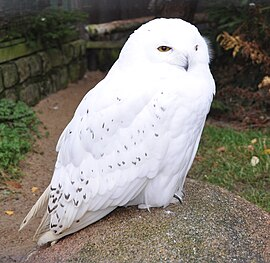

Night white owls, often referred to as snowy owls (Bubo scandiacus), are one of the most striking and mysterious creatures of the nocturnal world. With their pristine, white feathers that blend beautifully into snow-covered landscapes, these majestic birds have captivated the imaginations of many. Found primarily in the Arctic regions, snowy owls are known for their resilience to extreme cold, making them perfectly adapted to life in the frozen tundra.

These owls are not just visually stunning, but also highly skilled hunters. They rely on their excellent vision, which allows them to see in low-light conditions, and their exceptional hearing, enabling them to detect prey under thick snow. Their diet consists mainly of small mammals, such as lemmings and voles, but they have also been known to hunt birds and even larger prey when food is scarce.
Snowy owls are primarily nocturnal hunters, venturing out during the night when their prey is most active. During the day, they often rest on elevated perches or snowbanks, camouflaged against the white landscape. Their feathers, not only provide insulation, but also help with silent flight, allowing them to swoop down on their prey without making a sound.